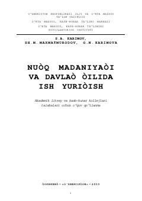

NMAkademik litsey va kollej talabalari uchun nutq madaniyati va ish yuritish bo'yicha o'quv qo'llanma.
Mazkur o'quv qo'llanma akademik litsey va kasb-hunar kollejlari talabalari uchun mo'ljallangan bo'lib, o'zbek tilining ijtimoiy mohiyati, nutq madaniyati asoslari hamda davlat tilida ish yuritish hujjatlarini rasmiylashtirish qoidalarini o'rgatadi. Kitobda nutqiy faoliyat turlari, matn tuzilishi, atamalar va turli rasmiy hujjatlar turlari batafsil yoritib berilgan.